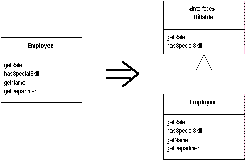

Extract Interface
Several clients use the same subset of a class's interface, or two classes have part of their interfaces in common.
Extract the subset into an interface.

For more information see page
341
of Refactoring
| Refactoring Home | | Alphabetical List |